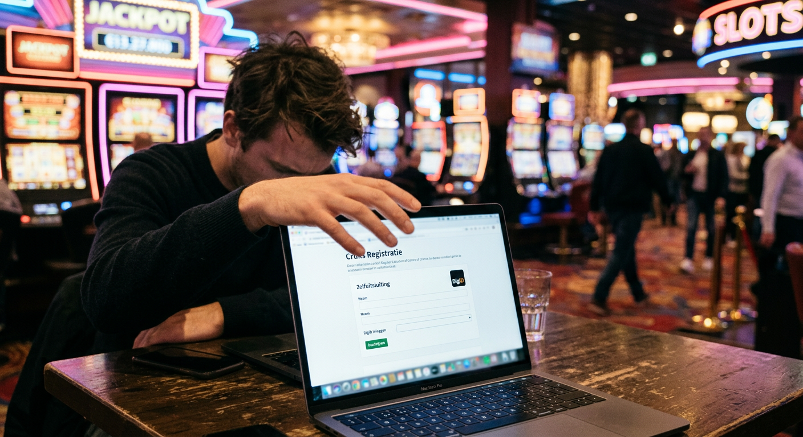
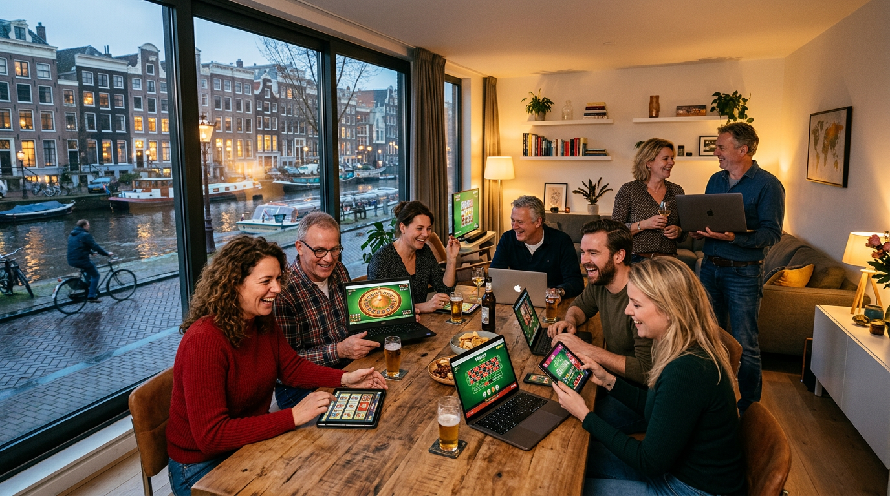
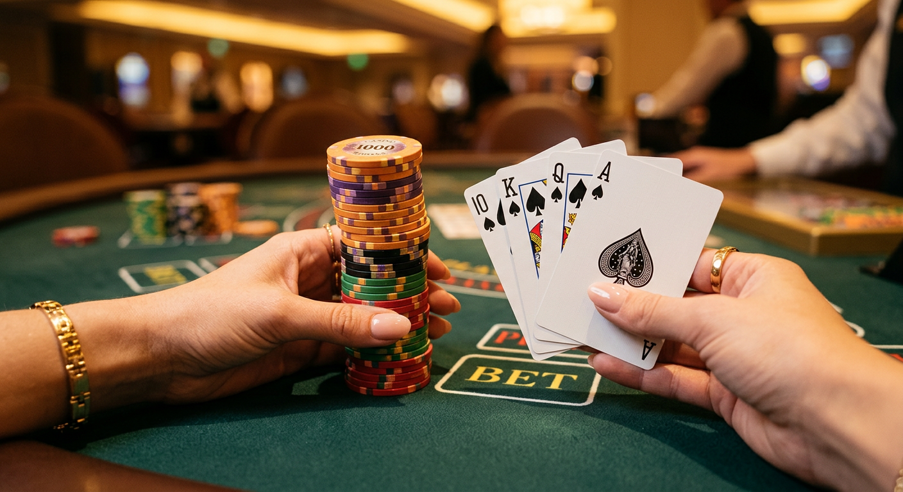
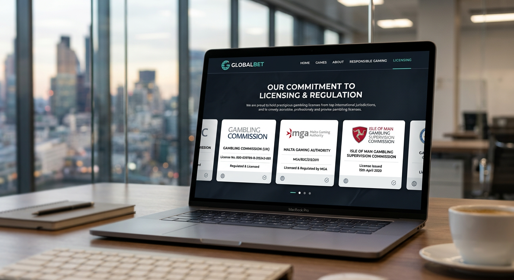

Casino zonder Cruks: De complete gids voor veilig gokken buiten de KSA
Het online goklandschap in Nederland is in 2026 drastisch veranderd. Sinds de invoering van de Wet Kansspelen op Afstand zijn de regels voor legale aanbieders steeds strenger geworden. Voor veel ervaren spelers voelt de Nederlandse markt inmiddels te beperkt aan. Dit heeft geleid tot een enorme groei in de populariteit van het casino zonder cruks. In dit uitgebreide artikel duiken we diep in de wereld van internationale goksites die niet zijn aangesloten bij het Nederlandse uitsluitingsregister. We bespreken de veiligheid, de voordelen, de risico's en hoe u in 2026 de beste keuze maakt voor uw speelplezier.
De roep om meer vrijheid en minder bemoeienis van de overheid is sterker dan ooit. Spelers zoeken naar een nieuwe online casino ervaring waar ze zelf controle hebben over hun speellimieten en stortingsgedrag. Terwijl de Kansspelautoriteit (Ksa) de duimschroeven bij lokale aanbieders steeds verder aandraait, bieden buitenlandse platformen een alternatief dat zowel modern als uitdagend is. Maar wat betekent het precies om bij een casino zonder cruks te spelen, en waar moet u op letten om uw winsten veilig uitbetaald te krijgen?
In deze gids analyseren we de belangrijkste aspecten van deze markt. Van de betrouwbaarheid van licenties uit Malta en Curaçao tot de innovatieve betaalmethoden zoals crypto en instant banking. We kijken ook naar het spelaanbod, waarbij titels van topontwikkelaars zoals Pragmatic Play centraal staan. Of u nu een liefhebber bent van blackjack, roulette, of liever op de nieuwste gokkasten speelt, u vindt hier alle informatie die u nodig heeft om verantwoord en plezierig te gokken in 2026.
Top 10 Beste online casino's zonder Cruks in 2026
De markt voor internationale goksites is in 2026 verzadigd, maar er zijn enkele uitblinkers die consistent hoge scores behalen op het gebied van veiligheid, snelheid en bonusvoorwaarden. Onze experts hebben honderden platformen getest om deze top 10 samen te stellen. Elk casino zonder cruks in deze lijst is handmatig gecontroleerd op uitbetalingssnelheid en klantenservice.
| Positie | Casino Naam | Belangrijkste Kenmerk | Bonus (2026) | Link |
|---|---|---|---|---|
| 1 | Goldbet | Snelste uitbetalingen | 100% tot €500 + 100 FS | Bezoek Goldbet |
| 2 | Newlucky | Beste Loyaliteitsprogramma | €1000 Welkomstpakket | Bezoek Newlucky |
| 3 | Dragobet | Hoogste Odds Sportsbook | 150% Sport Bonus | Bezoek Dragobet |
| 4 | Fortunicabet | VIP Behandeling | Cashback tot 25% | Bezoek Fortunicabet |
| 5 | Spinorhino | Grootste Slot Aanbod | 200 Gratis Spins | Bezoek Spinorhino |
| 6 | Lizaro | Crypto Vriendelijk | Stort in BTC/ETH | Bezoek Lizaro |
| 7 | Hidden Jack | Privacy Focus | Anoniem Gokken | Bezoek Hidden Jack |
Bij het selecteren van een aanbieder zoals Goldbet of Newlucky, profiteert u van jarenlange ervaring in de internationale markt. Deze merken begrijpen dat de Nederlandse speler hoge eisen stelt aan gebruiksvriendelijkheid en technische stabiliteit. In 2026 zien we dat vooral de integratie van Live Casino spellen en uitgebreide sportweddenschappen doorslaggevend is voor de populariteit van een platform.
Criteria voor onze expert reviews
Onze beoordelingen komen niet zomaar tot stand. Om een casino zonder cruks als 'veilig' te bestempelen, moet het voldoen aan een reeks strenge voorwaarden. In 2026 kijken we verder dan alleen de licentie; we testen de daadwerkelijke ervaring van een speler van registratie tot de laatste cent van de uitbetaling.
- Licentieverificatie: We controleren of de licentie bij autoriteiten zoals de MGA of Curaçao Gaming Control Board actief en geldig is.
- Software Providers: Aanwezigheid van gerenommeerde namen zoals Pragmatic Play, NetEnt en Evolution Gaming.
- RTP Transparantie: Het RTP (Return to Player) percentage moet voor elk spel inzichtelijk zijn en eerlijk worden berekend.
- Klantenservice: Is er 24/7 ondersteuning via live chat? Worden klachten serieus genomen?
- Betaalsnelheid: Hoe lang duurt het voordat een winst op de rekening van de speler staat? In 2026 verwachten we directe uitbetalingen via e-wallets.
Wat is een casino zonder Cruks precies?

Een casino zonder cruks is simpelweg een online kansspelaanbieder die geen licentie heeft van de Nederlandse Kansspelautoriteit en daardoor niet verbonden is aan het Centraal Register Uitsluiting Kansspelen. Dit betekent dat als u zich vrijwillig of onvrijwillig heeft ingeschreven in Cruks, u bij deze buitenlandse aanbieders nog steeds terecht kunt. Hoewel dit risico's met zich meebrengt, biedt het ook een uitkomst voor spelers die ten onrechte in het register staan of die na een afkoelingsperiode weer verantwoord willen spelen zonder bureaucratische rompslomp.
Deze casino's opereren vaak onder licenties uit andere rechtsgebieden. Ze zijn dus niet "illegaal" in de zin dat ze nergens gereguleerd zijn, maar ze vallen buiten de Nederlandse wetgeving. In 2026 is de techniek achter deze platforms zo geavanceerd dat ze qua veiligheid nauwelijks onderdoen voor de grote Nederlandse namen. Sterker nog, veel spelers vinden de interface van een internationaal online casino vaak moderner en sneller werken dan de vaak logge systemen van lokale aanbieders.
De rol van het Centraal Register Uitsluiting Kansspelen
Het Cruks-systeem is ontworpen om gokverslaving tegen te gaan. Wanneer een speler merkt dat het gokken problematisch wordt, kan hij zich voor minimaal zes maanden laten blokkeren bij alle legale Nederlandse goksites en fysieke casino's zoals Hommerson of Holland Casino. In 2026 is dit systeem echter onderwerp van veel discussie, omdat de drempel om weer te mogen spelen na de uitsluiting steeds hoger wordt. Dit drijft veel recreatieve spelers richting een casino zonder cruks.
Het register is gekoppeld aan uw DigiD en BSN-nummer. Bij een buitenlands casino zonder cruks worden deze gegevens niet gecontroleerd tegen de Nederlandse database. Hierdoor behoudt u uw anonimiteit ten opzichte van de Nederlandse overheid. Bedrijven als Dragobet bieden hierdoor een omgeving waar privacy hoog in het vaandel staat, iets wat in het huidige digitale tijdperk van 2026 steeds zeldzamer wordt bij gereguleerde aanbieders.
Waarom kiezen Nederlanders voor buitenlandse goksites?

De redenen waarom spelers de overstap maken naar een casino zonder cruks zijn divers. In 2026 zien we dat de Nederlandse wetgeving zo restrictief is geworden, met speelpauzes om de 30 minuten en verplichte stortingslimieten van soms slechts €100 per week, dat de fun-factor voor velen is verdwenen. Buitenlandse sites bieden de vrijheid die in Nederland verloren is gegaan. Of het nu gaat om hogere inzetten bij blackjack of het onbeperkt draaien op gokkasten, de beperkingen zijn minimaal.
Bovendien is de technologische voorsprong van internationale platforms groot. Waar de Nederlandse markt traag reageert op innovaties zoals AI-gestuurde spelaanbevelingen of instant-crypto transacties, lopen sites zoals Fortunicabet voorop. Spelers willen niet wachten op goedkeuring van de Ksa voor elke kleine wijziging; ze willen de nieuwste features nú ervaren.
Hogere bonussen en betere promoties
Een van de grootste trekkers van een casino zonder cruks is ongetwijfeld het bonusbeleid. Nederlandse casino's mogen sinds 2024 nauwelijks nog reclame maken en hun bonussen zijn wettelijk aan banden gelegd. In 2026 ziet u bij een buitenlands platform nog steeds welkomstbonussen die oplopen tot duizenden euro's, aangevuld met honderden free spins zonder ingewikkelde rondspeelvoorwaarden.
Deze promoties zijn vaak veel creatiever. Denk aan dagelijkse cashbacks, VIP-reizen en toernooien met enorme prijzenpotten. Bij merken zoals Spinorhino kunt u rekenen op een loyaliteitsprogramma dat echt waarde toevoegt aan uw speelsessies. Waar u in Nederland misschien een keer een "gratis spins" aanbieding van €5 krijgt, kunt u hier rekenen op serieuze extra's die uw winkansen bij roulette of slots aanzienlijk verhogen.
Geen strenge limieten en speelpauzes
Sinds begin 2026 zijn de regels in Nederland verder aangescherpt: spelers worden gedwongen om na elk uur spelen een pauze van 15 minuten in te lassen. Dit verstoort de flow van het spel, vooral in het Live Casino waar interactie met de dealer centraal staat. Bij een casino zonder cruks bepaalt u zelf hoe lang u speelt. Er is geen centrale server die uw speelgedrag monitort en u plotseling uitlogt midden in een spannende ronde.
Ook de financiële limieten zijn bij een casino zonder cruks veel flexibeler. Voor high rollers die gewend zijn aan hogere inzetten bij Poker of sportweddenschappen, is Nederland bijna onspeelbaar geworden. Internationale sites accepteren vaak stortingen en inzetten die vele malen hoger liggen dan de Ksa-normen, mits u kunt aantonen dat u het geld kunt missen via hun eigen 'Know Your Customer' (KYC) procedures.
Voordelen van spelen bij een casino zonder Cruks

Het grootste voordeel van een casino zonder cruks is de ongekende keuzevrijheid. U bent niet beperkt tot de handvol aanbieders die een Nederlandse licentie hebben weten te bemachtigen. U heeft toegang tot een wereldwijde markt met duizenden verschillende goksites. Dit zorgt voor gezonde concurrentie, wat zich vertaalt in betere odds voor sportweddenschappen en een hogere kwaliteit van de spellen zelf.
Bovendien is het registratieproces vaak veel sneller. In plaats van urenlang wachten op een iDIN-verificatie, kunt u bij veel casino zonder cruks opties binnen enkele minuten beginnen met spelen. Platforms zoals Lizaro maken gebruik van 'No Account' technologie of snelle verificatie via e-mail, waardoor de barrière om te starten minimaal is. Dit is ideaal voor de moderne speler die onmiddellijke bevrediging zoekt.
Een ander belangrijk voordeel is de beschikbaarheid van games die in Nederland verboden zijn. Denk aan bepaalde "Buy Bonus" features op slots of autoplay-functies. Voor veel spelers zijn dit essentiële onderdelen van hun strategie of spelbeleving. In een casino zonder cruks zijn deze functies gewoon beschikbaar, net als de enorme progressieve jackpots die internationaal worden gedeeld en daardoor veel sneller oplopen naar miljoenenbedragen.
Risico's en nadelen om rekening mee te houden
Hoewel de voordelen verleidelijk zijn, is het cruciaal om ook de schaduwzijden van een casino zonder cruks te belichten. Het grootste risico is het gebrek aan juridische bescherming door de Nederlandse overheid. Mocht u een conflict krijgen over een uitbetaling met een casino in Curaçao, dan kan de Ksa u niet helpen. U bent dan aangewezen op de lokale toezichthouder van dat land, wat vaak een langdurig en ingewikkeld proces kan zijn.
Daarnaast is er het aspect van zelfbescherming. Het Cruks-systeem is er niet voor niets; het is een vangnet. Wie gevoelig is voor gokverslaving loopt bij een casino zonder cruks meer gevaar omdat de drempels om te blijven storten lager zijn. Het ontbreken van een centrale database betekent dat u zelf verantwoordelijk bent voor het instellen van limieten op elk individueel platform waar u speelt. Het vereist dus een hoge mate van zelfdiscipline om veilig te blijven in 2026.
Ook de betrouwbaarheid van de software kan variëren. Hoewel topmerken altijd eerlijke spellen aanbieden, zijn er in de krochten van het internet ook minder bonafide sites te vinden. Daarom raden wij altijd aan om alleen te spelen bij aanbevolen merken zoals Hidden Jack, die hun RNG (Random Number Generator) laten testen door externe bureaus zoals eCOGRA of iTech Labs.
Betrouwbare licenties bij internationale aanbieders

Niet elk casino zonder cruks is hetzelfde. De licentie is het belangrijkste keurmerk voor de betrouwbaarheid van een site. In 2026 zijn er vier belangrijke rechtsgebieden die licenties uitgeven aan goksites die wereldwijd opereren. Elk heeft zijn eigen regels, sterke punten en zwakke punten. Het is essentieel om te weten waar uw gekozen casino onder valt voordat u geld stort.
Buitenlandse licenties zorgen ervoor dat het online casino zich moet houden aan basisregels rondom eerlijk spel, gegevensbeveiliging en het tegengaan van witwassen. Hoewel ze niet de strenge Nederlandse normen volgen, bieden ze vaak een uitstekende balans tussen spelersvrijheid en basisveiligheid. Merken als LeoVegas en BetMGM zijn ooit groot geworden onder deze internationale vlaggen voordat ze lokale markten betraden.
Malta Gaming Authority (MGA)
De MGA licentie wordt in 2026 nog steeds beschouwd als de "gouden standaard" binnen de EU voor een casino zonder cruks. De eisen van Malta zijn streng en liggen dicht bij de Nederlandse normen, maar zonder de verstikkende Cruks-koppeling. Een casino met een MGA licentie biedt uitstekende spelersbescherming en een officiële weg om klachten in te dienen. Veel professionele spelers kiezen uitsluitend voor MGA-sites vanwege deze betrouwbaarheid.
Curaçao Gaming Authority
Curaçao is de meest voorkomende licentie voor een casino zonder cruks. In 2026 is de regelgeving hier sterk gemoderniseerd, waardoor het oude imago van het "wilde westen" grotendeels is verdwenen. Curaçao-licenties zijn populair bij sites die ook cryptovaluta accepteren. Merken die hieronder vallen bieden vaak de hoogste bonussen en de minste beperkingen op het gebied van spelaanbod en inzetlimieten.
Kahnawake Gaming Commission
Gelegen in Canada, is de Kahnawake licentie een gerespecteerde speler in de internationale markt. Ze staan bekend om hun strikte focus op de integriteit van de software en de financiële stabiliteit van de aanbieders. Een casino zonder cruks met een Kahnawake licentie is vaak een veilige haven voor Noord-Amerikaanse en Europese spelers die op zoek zijn naar een eerlijk spelverloop bij blackjack of poker.
Anjouan Gaming License
Een relatief nieuwe speler die in 2026 veel terrein heeft gewonnen, is de Anjouan licentie (Comoren). Hoewel minder bekend dan de MGA, biedt het een kosteneffectief alternatief voor kleinere, innovatieve goksites. Voor spelers betekent een Anjouan-gelicentieerd casino zonder cruks vaak toegang tot zeer moderne platforms met unieke gamification elementen die u elders niet vindt.
Betaalmethoden: Hoe werkt storten en uitbetalen?
Een van de grootste uitdagingen voor een casino zonder cruks in 2026 is het aanbieden van soepele betaalmethoden voor Nederlandse spelers. Omdat iDEAL officieel alleen voorbehouden is aan legale Nederlandse aanbieders, hebben internationale sites slimme alternatieven ontwikkeld. Deze alternatieven zijn vaak sneller en bieden meer privacy dan de traditionele bankoverschrijvingen.
Het is belangrijk om te controleren welke methoden een casino ondersteunt voor zowel stortingen als opnames. Niets is frustrerender dan een mooie winst behalen met gratis spins en er vervolgens achter komen dat de uitbetalingsmethode dagen in beslag neemt. Gelukkig zijn de meeste moderne platformen uitgerust met 'Instant Banking' oplossingen die vrijwel identiek werken aan wat we in Nederland gewend zijn.
Mogelijkheden voor iDEAL en alternatieven
Hoewel het echte iDEAL-logo soms ontbreekt bij een casino zonder cruks, ziet u vaak methoden zoals Volt, Klarna of Trustly. Deze systemen koppelen direct aan uw Nederlandse bankrekening (bijv. ING, Rabobank of ABN Amro) en werken via dezelfde beveiligde omgeving als iDEAL. Het grote voordeel is dat de betaling direct verwerkt wordt, waardoor u meteen kunt gaan spelen op uw favoriete gokkasten.
In 2026 zien we ook de opkomst van 'open banking' apps die speciaal zijn ontworpen voor de gokindustrie. Deze apps fungeren als een brug tussen uw bank en het casino met snelle uitbetalingen als resultaat. Merken zoals Goldbet hebben deze systemen naadloos geïntegreerd in hun kassa-omgeving.
Crypto en E-wallets gebruiken
Voor wie maximale anonimiteit wil bij een casino zonder cruks, zijn cryptovaluta zoals Bitcoin, Ethereum en USDT de beste keuze. Transacties zijn razendsnel en verschijnen niet op uw reguliere bankafschrift. Dit is ideaal voor spelers die hun gokactiviteiten gescheiden willen houden van hun dagelijkse financiën. Platforms als Lizaro zijn volledig geoptimaliseerd voor crypto-gebruikers.
E-wallets zoals MiFinity, Jeton en Revolut blijven ook in 2026 razend populair. Ze bieden een extra laag beveiliging omdat u uw bankgegevens niet direct met het casino hoeft te delen. Bovendien zijn uitbetalingen naar e-wallets bij een casino zonder cruks vaak binnen enkele uren (en soms zelfs minuten) afgerond, wat een groot voordeel is ten opzichte van de 1-3 werkdagen die Nederlandse banken hanteren.
Verschillen tussen legale Nederlandse casino's en no Cruks opties
Om een weloverwogen keuze te maken, is het goed om de verschillen naast elkaar te zetten. Legale Nederlandse casino's zoals Starcasino of GetLucky moeten voldoen aan de strengste zorgplicht ter wereld. Dit betekent dat zij proactief ingrijpen als zij denken dat u te veel verliest. Een casino zonder cruks legt die verantwoordelijkheid meer bij de speler zelf. Dit is een fundamenteel verschil in filosofie: betutteling versus eigen verantwoordelijkheid.
Ook het spelaanbod verschilt aanzienlijk. Nederlandse casino's hebben vaak een beperkter aanbod omdat elke spelontwikkelaar een aparte certificering voor de Nederlandse markt moet aanvragen. Bij een casino zonder cruks vindt u vaak titels van honderden verschillende providers, waaronder kleinere studio's die zeer innovatieve games maken. De diversiteit in het Live Casino is ook vaak groter, met meer variaties van roulette en blackjack die in Nederland niet zijn toegestaan.
| Kenmerk | NL Casino (Ksa) | Casino zonder Cruks |
|---|---|---|
| Cruks Koppeling | Verplicht | Nee |
| Bonussen | Zeer beperkt | Zeer hoog |
| Stortingslimieten | Strikt (door overheid) | Flexibel (door speler) |
| Betaalmethoden | iDEAL, Creditcard | Crypto, E-wallets, Volt |
| Identiteitscontrole | Via DigiD/iDIN | KYC/Documenten |
| Spelaanbod | Geregeerd door Ksa | Onbeperkt internationaal |
Verantwoord spelen zonder nationaal register
Spelen bij een casino zonder cruks ontslaat u niet van de noodzaak om verantwoord te gokken. Integendeel, de noodzaak is groter omdat het externe vangnet van de Nederlandse staat ontbreekt. De beste internationale goksites in 2026 bieden echter uitstekende eigen tools voor verantwoord spelen. U kunt bij sites als Newlucky vaak in uw eigen profiel limieten instellen voor stortingen, verliezen en sessieduur.
Het is raadzaam om voor uzelf een maandelijks budget vast te stellen en u daar strikt aan te houden. Zie gokken als entertainment, niet als een manier om geld te verdienen. Als u merkt dat u de controle verliest, bieden de meeste casino zonder cruks aanbieders de mogelijkheid tot een "self-exclusion" voor dat specifieke platform. Dit is vergelijkbaar met Cruks, maar dan alleen geldig voor die ene site. Voor hulp bij gokproblemen kunt u internationaal terecht bij organisaties zoals GamCare of Gambling Therapy.
Een goede strategie is om winsten direct uit te laten betalen en alleen met uw oorspronkelijke inzet verder te spelen. In 2026 maken veel spelers ook gebruik van aparte bankrekeningen of e-wallets specifiek voor hun casino-budget. Zo houdt u een perfect overzicht van uw uitgaven en voorkomt u dat gokken ten koste gaat van uw dagelijkse vaste lasten.
Conclusie: Is een goksite zonder Cruks veilig voor jou?
In 2026 is het casino zonder cruks een volwaardig alternatief geworden voor de streng gereguleerde Nederlandse markt. Voor spelers die op zoek zijn naar meer vrijheid, hogere bonussen en een breder spelaanbod, bieden internationale platforms ongekende mogelijkheden. Merken zoals Goldbet, Newlucky en Dragobet hebben bewezen dat ze een veilige en eerlijke omgeving kunnen bieden aan Nederlandse spelers.
Echter, de keuze voor een casino zonder cruks brengt ook een grotere verantwoordelijkheid met zich mee. U moet zelf de kwaliteit van de licentie controleren, uw eigen limieten beheren en alert zijn op de risico's. Als u over de nodige zelfdiscipline beschikt en kiest voor gerenommeerde aanbieders met goede reviews, kan het spelen buiten de KSA-regels een verrijking zijn van uw online gokervaring. Of u nu gaat voor de spanning van sportweddenschappen of de glitter van het Live Casino, doe het altijd met mate en met verstand.
De toekomst van online gokken in Nederland blijft onzeker door de voortdurende politieke druk op de sector. Voor velen is de uitwijkmogelijkheid naar een betrouwbaar online casino in het buitenland daarom een geruststellende gedachte. We hopen dat deze gids u heeft geholpen om een helder beeld te krijgen van de mogelijkheden in 2026. Veel succes aan de tafels!
Veelgestelde vragen over online casino's zonder Cruks
Is gokken bij een casino zonder Cruks legaal?
Vanuit het perspectief van de speler is het niet verboden om bij een buitenlands casino zonder cruks te spelen. Echter, deze aanbieders hebben geen Nederlandse vergunning en richten zich officieel niet op de Nederlandse markt. De verantwoordelijkheid ligt bij de speler zelf om de lokale wetgeving en de voorwaarden van het casino te respecteren.
Kan ik iDEAL gebruiken bij deze casino's?
Hoewel iDEAL vaak niet direct als merk aanwezig is, bieden de meeste casino zonder cruks sites alternatieven zoals Volt of Trustly aan. Deze werken op exact dezelfde manier via uw eigen Nederlandse bank. Het is een veilige en vertrouwde manier om direct geld te storten en te beginnen met spelen.
Wat gebeurt er als ik win in een casino zonder Cruks?
Als u wint, kunt u een uitbetaling aanvragen via de door u gekozen methode. Bij betrouwbare sites zoals Fortunicabet worden deze verzoeken meestal binnen 24 uur verwerkt. Houd er rekening mee dat u in Nederland mogelijk kansspelbelasting moet betalen over uw winsten bij buitenlandse casino's, afhankelijk van de actuele belastingwetgeving in 2026.
Zijn de spellen in een casino zonder Cruks eerlijk?
Ja, mits u kiest voor een casino met een erkende licentie (zoals MGA of Curaçao). Deze casino's maken gebruik van gerenommeerde software providers zoals Pragmatic Play, die hun spellen laten testen door onafhankelijke instanties. Het RTP van de spellen is vaak zelfs gunstiger dan bij Nederlandse aanbieders omdat de overheadkosten voor deze casino's lager zijn.
Kan ik mezelf uitsluiten bij een casino zonder Cruks?
Ja, elk fatsoenlijk casino zonder cruks biedt tools voor zelfuitsluiting aan. Dit geldt echter alleen voor dat specifieke casino of die specifieke groep van casino's. Er is geen overkoepelend internationaal register dat u in één keer bij alle buitenlandse sites blokkeert, dus u moet dit per aanbieder regelen.
Welke spellen zijn het populairst in 2026?
In 2026 zien we een enorme populariteit van "Crash Games" en interactieve Live Casino shows. Natuurlijk blijven klassiekers als blackjack, roulette en moderne gokkasten met innovatieve bonusfeatures de basis vormen van elk goed casino zonder cruks aanbod.

Expert in online casino's en digitaal gokken met meer dan 8 jaar ervaring in de sector.